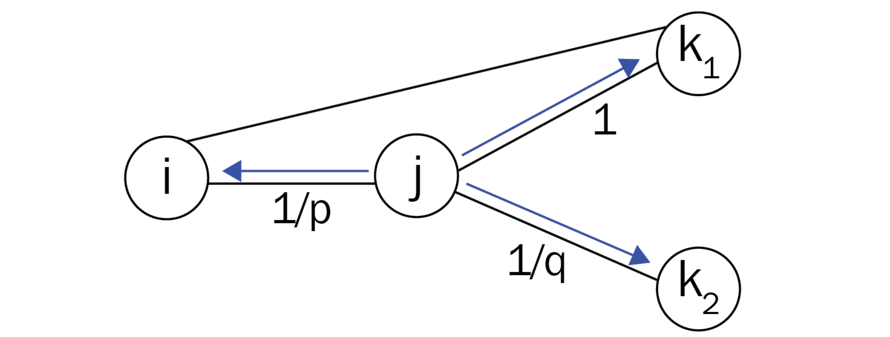

Biased Random Walks in Node2Vec#
Node2Vec is an architecture based on DeepWalk, focusing on improving the quality of embeddings by modifying the way random walks are generated. This chapter discusses these modifications and how to find the best parameters for a given graph. It includes implementing Node2Vec and comparing it to DeepWalk using Zachary’s Karate Club dataset. Additionally, it covers building a movie recommender system (RecSys) powered by Node2Vec.
By the end of this chapter, you’ll learn to implement Node2Vec on any graph dataset, select good parameters, and understand why it generally outperforms DeepWalk. You’ll also see how to apply it to build creative applications.
Topics covered include:
Introducing Node2Vec
Implementing Node2Vec
Building a movie RecSys
Node2Vec#
Node2Vec is a powerful algorithm for learning continuous feature representations of nodes in a graph. It extends the idea of random walks to create flexible and efficient node embeddings by simulating both Depth-First Search (DFS) and Breadth-First Search (BFS) strategies through the introduction of two parameters: the return parameter \( p \) and the in-out parameter \( q \).
Transition Probabilities#
Let’s take the following figure as an example. In this context, we denote the current node as \( j \), the previous node as \( i \), and the future node as \( k \).

We define \( \pi_{jk} \) as the unnormalized transition probability from node \( j \) to node \( k \). This probability can be decomposed as follows:
Where:
\( \alpha(i, k) \) represents the search bias between nodes \( i \) and \( k \).
\( w_{jk} \) is the weight of the edge from node \( j \) to node \( k \).
Search Bias#
In the original DeepWalk algorithm, the search bias \( \alpha(a, b) \) is set to 1 for any pair of nodes, meaning that all transitions are treated equally. However, in Node2Vec, the value of \( \alpha(a, b) \) is defined based on the distance \( d(a, b) \) between the nodes and the parameters \( p \) and \( q \). The role of these parameters is to control the exploration behavior of the random walk, approximating DFS and BFS as follows:
Interpretation of Probabilities#
Let’s decrypt these probabilities:
Return Probability: When the walk starts from node \( j \) and arrives at node \( k \), the probability of returning to the previous node \( i \) is controlled by the parameter \( p \). A higher value of \( p \) encourages the random walk to explore new nodes rather than returning to the previous one, thus mimicking a DFS-like behavior.
Immediate Neighbors: The unnormalized probability of moving to node \( k_1 \) when it is an immediate neighbor of \( i \) (i.e., \( d(i, k_1) = 1 \)) is set to 1. This means that the random walk will always consider immediate neighbors as potential next steps.
Exploration of Distant Nodes: The probability of transitioning to a node \( k_2 \) that is two hops away (i.e., \( d(i, k_2) = 2 \)) is controlled by the parameter \( q \). A higher value of \( q \) will make the random walk focus more on nodes that are close to the previous node, resulting in a BFS-like exploration.
Node2Vec effectively balances exploration and exploitation in the random walk process by adjusting the transition probabilities based on the specified parameters \( p \) and \( q \). This flexibility allows Node2Vec to capture different structural properties of the graph, leading to meaningful node embeddings that can be used for various downstream tasks such as node classification, clustering, and link prediction.
Show code cell content
!pip install -q node2vec==0.4.6
!pip install -qI gensim==4.3.0
ERROR: Could not install packages due to an OSError: [WinError 5] Access is denied: 'C:\\programs\\anaconda3\\envs\\pth\\Lib\\site-packages\\wrapt\\_wrappers.cp310-win_amd64.pyd'
Consider using the `--user` option or check the permissions.
import networkx as nx
import matplotlib.pyplot as plt
# Create graph
G = nx.erdos_renyi_graph(10, 0.3, seed=1, directed=False)
# Plot graph
plt.figure()
plt.axis('off')
nx.draw_networkx(G,
pos=nx.spring_layout(G, seed=0),
node_size=600,
cmap='coolwarm',
font_size=14,
font_color='white'
)
c:\programs\anaconda3\envs\pth\lib\site-packages\networkx\drawing\nx_pylab.py:433: UserWarning: No data for colormapping provided via 'c'. Parameters 'cmap' will be ignored
node_collection = ax.scatter(
import random
random.seed(0)
import numpy as np
np.random.seed(0)
def next_node(previous, current, p, q):
alphas = []
# Get the neighboring nodes
neighbors = list(G.neighbors(current))
# Calculate the appropriate alpha value for each neighbor
for neighbor in neighbors:
# Distance = 0: probability to return to the previous node
if neighbor == previous:
alpha = 1/p
# Distance = 1: probability of visiting a local node
elif G.has_edge(neighbor, previous):
alpha = 1
# Distance = 2: probability to explore an unknown node
else:
alpha = 1/q
alphas.append(alpha)
# Normalize the alpha values to create transition probabilities
probs = [alpha / sum(alphas) for alpha in alphas]
# Randomly select the new node based on the transition probabilities
next = np.random.choice(neighbors, size=1, p=probs)[0]
return next
def random_walk(start, length, p, q):
walk = [start]
for i in range(length):
current = walk[-1]
previous = walk[-2] if len(walk) > 1 else None
next = next_node(previous, current, p, q)
walk.append(next)
return walk
random_walk(0, 8, p=1, q=1)
[0, 4, 7, 6, 4, 5, 4, 5, 6]
random_walk(0, 8, p=1, q=10)
[0, 9, 1, 9, 1, 9, 1, 0, 1]
random_walk(0, 8, p=10, q=1)
[0, 1, 9, 4, 7, 8, 7, 4, 6]
Using classic classification methods on created node embeddings, such as random forest#
For an introduction to Random Forest, see the Data Minig Course at FUM
Show code cell content
wv_model = Word2Vec.load('word2vec_model.model')
# import pickle
# with open('word2vec_model.pkl', 'rb') as f:
# wv_model = pickle.load(f)
from gensim.models.word2vec import Word2Vec
from sklearn.ensemble import RandomForestClassifier
from sklearn.metrics import accuracy_score
# Load dataset
G = nx.karate_club_graph()
# Process labels (Mr. Hi = 0, Officer = 1)
# labels = []
# for node in G.nodes:
# label = G.nodes[node]['club']
# labels.append(1 if label == 'Officer' else 0)
true_labels = np.zeros((len(G.nodes)), dtype='int')
for i, node in enumerate(G.nodes):
label = G.nodes[node]['club']
true_labels[i] = (1 if label == 'Officer' else 0)
# Create a list of random walks
walks = []
for node in G.nodes:
for _ in range(80):
walks.append(random_walk(node, 10, 3, 2))
# Create masks to train and test the model
train_mask = [2, 4, 6, 8, 10, 12, 14, 16, 18, 20, 22, 24]
test_mask = [0, 1, 3, 5, 7, 9, 11, 13, 15, 17, 19, 21, 23, 25, 26, 27, 28, 29, 30, 31, 32, 33]
# Our previous word2vec model
X_wv = np.array([wv_model.wv[str(node)] for node in G.nodes])
X_train_wv = X_wv[train_mask]
X_test_wv = X_wv[test_mask]
# Create and train Word2Vec for DeepWalk
node2vec = Word2Vec(walks,
hs=1, # Hierarchical softmax
sg=1, # Skip-gram
vector_size=50,
window=10,
workers=2,
min_count=1,
seed=0)
node2vec.train(walks, total_examples=node2vec.corpus_count, epochs=30, report_delay=1)
X_nv = np.array([node2vec.wv[node] for node in G.nodes])
X_train_nv = X_nv[train_mask]
X_test_nv = X_nv[test_mask]
# X_train = X[train_mask]
# X_test = X[test_mask]
y_train = true_labels[train_mask]
y_test = true_labels[test_mask]
# # Train Node2Vec classifier
# clf = RandomForestClassifier(random_state=0)
# clf.fit(node2vec.wv[train_mask], labels[train_mask])
# # Evaluate accuracy
# y_pred = clf.predict(node2vec.wv[test_mask])
# acc = accuracy_score(y_pred, labels[test_mask])
# print(f'Node2Vec accuracy = {acc*100:.2f}%')
from sklearn.ensemble import RandomForestClassifier
from sklearn.metrics import accuracy_score
# Train classifier
clf = RandomForestClassifier(random_state=0)
clf.fit(X_train_wv, y_train)
# Evaluate accuracy
y_pred = clf.predict(X_test_wv)
acc_wv = accuracy_score(y_test, y_pred)
print(f'Accuracy (w2v embeddings) = {acc_wv*100:.2f}%')
clf.fit(X_train_nv, y_train)
y_pred = clf.predict(X_test_nv)
acc_nv = accuracy_score(y_test, y_pred)
print(f'Accuracy (n2v embeddings) = {acc_nv*100:.2f}%')
Accuracy (w2v embeddings) = 90.91%
Accuracy (n2v embeddings) = 100.00%
Building a movie Recommender System#
MovieLens 100K Dataset#
The MovieLens 100K dataset contains 100,000 ratings from 943 users on 1,682 movies. Each user has rated at least 20 movies. The data was collected through the MovieLens website during the seven-month period from September 19th, 1997 through April 22nd, 1998. This dataset is used for research in collaborative filtering and recommendation systems.
The ratings table contains the following columns:
user_id: The ID of the user who rated the movie.movie_id: The ID of the movie that was rated.rating: The rating given to the movie by the user.unix_timestamp: The timestamp of when the rating was given.
The rating column contains values that represent the ratings given by users to movies. The ratings are on a discrete scale from 1 to 5, where:
1: Indicates the lowest rating.
5: Indicates the highest rating.
import os
from urllib.request import urlopen
from zipfile import ZipFile
from io import BytesIO
# Define the URL
url = 'https://files.grouplens.org/datasets/movielens/ml-100k.zip'
# Define the path to the 'var' directory
var_directory = 'var'
# Check if the 'var' directory exists, and create it if it does not
if not os.path.exists(var_directory):
os.makedirs(var_directory)
# Download and extract the data
with urlopen(url) as zurl:
with ZipFile(BytesIO(zurl.read())) as zfile:
zfile.extractall(var_directory)
print(f'Data has been downloaded and extracted to the {var_directory} directory.')
Data has been downloaded and extracted to the var directory.
import pandas as pd
ratings = pd.read_csv('var/ml-100k/u.data', sep='\t', names=['user_id', 'movie_id', 'rating', 'unix_timestamp'])
ratings.shape
(100000, 4)
# Get the number of unique users
num_unique_users = ratings['user_id'].nunique()
print(f'The number of unique users is: {num_unique_users}')
The number of unique users is: 943
ratings.head()
| user_id | movie_id | rating | unix_timestamp | |
|---|---|---|---|---|
| 0 | 196 | 242 | 3 | 881250949 |
| 1 | 186 | 302 | 3 | 891717742 |
| 2 | 22 | 377 | 1 | 878887116 |
| 3 | 244 | 51 | 2 | 880606923 |
| 4 | 166 | 346 | 1 | 886397596 |
movies = pd.read_csv('var/ml-100k/u.item', sep='|', usecols=range(2), names=['movie_id', 'title'], encoding='latin-1')
movies.shape
(1682, 2)
movies.head()
| movie_id | title | |
|---|---|---|
| 0 | 1 | Toy Story (1995) |
| 1 | 2 | GoldenEye (1995) |
| 2 | 3 | Four Rooms (1995) |
| 3 | 4 | Get Shorty (1995) |
| 4 | 5 | Copycat (1995) |
# Only consider ratings with the highest score
ratings = ratings[ratings.rating >= 4]
num_unique_users = ratings['user_id'].nunique()
print(f'The number of unique users is: {num_unique_users}')
print(ratings.shape)
ratings.head()
The number of unique users is: 942
(55375, 4)
| user_id | movie_id | rating | unix_timestamp | |
|---|---|---|---|---|
| 5 | 298 | 474 | 4 | 884182806 |
| 7 | 253 | 465 | 5 | 891628467 |
| 11 | 286 | 1014 | 5 | 879781125 |
| 12 | 200 | 222 | 5 | 876042340 |
| 16 | 122 | 387 | 5 | 879270459 |
# Get the rows where user_id is 298
user_298_ratings = ratings.loc[ratings['user_id'] == 298]
print(user_298_ratings)
user_id movie_id rating unix_timestamp
5 298 474 4 884182806
122 298 317 4 884182806
614 298 181 4 884125629
1278 298 625 4 884183406
1859 298 252 4 884183833
... ... ... ... ...
74013 298 9 4 884126202
74659 298 357 5 884181969
74734 298 187 5 884183063
96001 298 282 4 884125629
98869 298 482 5 884182657
[91 rows x 4 columns]
Building Movie Pair Frequencies#
Description#
The following code snippet constructs a dictionary named pairs that stores the frequency of co-occurrences for each pair of movies rated by the same user. By iterating through the entire list of users and counting every instance where two movies are rated together, we can later use this information to create edges in a graph. This graph will represent the relationships between movies based on user ratings, allowing us to analyze movie similarities and user preferences.
from collections import defaultdict
pairs = defaultdict(int)
# Loop through the entire list of users
for group in ratings.groupby("user_id"):
# List of IDs of movies rated by the current user
user_movies = list(group[1]["movie_id"])
# Count every time two movies are seen together
for i in range(len(user_movies)):
for j in range(i+1, len(user_movies)):
pairs[(user_movies[i], user_movies[j])] += 1
The pairs object now stores the number of times two movies have been liked by the same user. We can use this information to build the edges of our graph as follows.
# Create a networkx graph
G = nx.Graph()
# Try to create an edge between movies that are liked together
for pair in pairs:
movie1, movie2 = pair
score = pairs[pair]
# The edge is only created when the score is high enough
if score >= 20:
G.add_edge(movie1, movie2, weight=score)
print("Total number of graph nodes:", G.number_of_nodes())
print("Total number of graph edges:", G.number_of_edges())
Total number of graph nodes: 410
Total number of graph edges: 14936
Here we use the node2vec library instead of creating random walks , …
from node2vec import Node2Vec
node2vec = Node2Vec(G, dimensions=64, walk_length=20, num_walks=200, p=2, q=1, workers=1)
model = node2vec.fit(window=10, min_count=1, batch_words=4)
c:\programs\anaconda3\envs\pth\lib\site-packages\tqdm\auto.py:21: TqdmWarning: IProgress not found. Please update jupyter and ipywidgets. See https://ipywidgets.readthedocs.io/en/stable/user_install.html
from .autonotebook import tqdm as notebook_tqdm
Computing transition probabilities: 100%|██████████| 410/410 [00:18<00:00, 21.97it/s]
Generating walks (CPU: 1): 100%|██████████| 200/200 [00:40<00:00, 5.00it/s]
def recommend(movie):
movie_id = str(movies[movies.title == movie].movie_id.values[0])
for id in model.wv.most_similar(movie_id)[:5]:
title = movies[movies.movie_id == int(id[0])].title.values[0]
print(f'{title}: {id[1]:.2f}')
recommend('Star Wars (1977)')
Return of the Jedi (1983): 0.61
Raiders of the Lost Ark (1981): 0.55
Godfather, The (1972): 0.49
Indiana Jones and the Last Crusade (1989): 0.46
White Squall (1996): 0.44